资料时间：本文按 2026 年 9 月 6 日 Capital One 美国官网公开信息整理。卡片、奖励、年费、利率、申请条件和个人 offer 都可能变化，正式申请前请重新核对官网与本人看到的条款。
范围说明：官网还包含学生卡、押金卡、商业卡和商店联名卡。本文只讨论与建立美国信用记录、日常返现和旅行里程较相关的八张个人卡，不是完整产品清单，也不是申请建议。
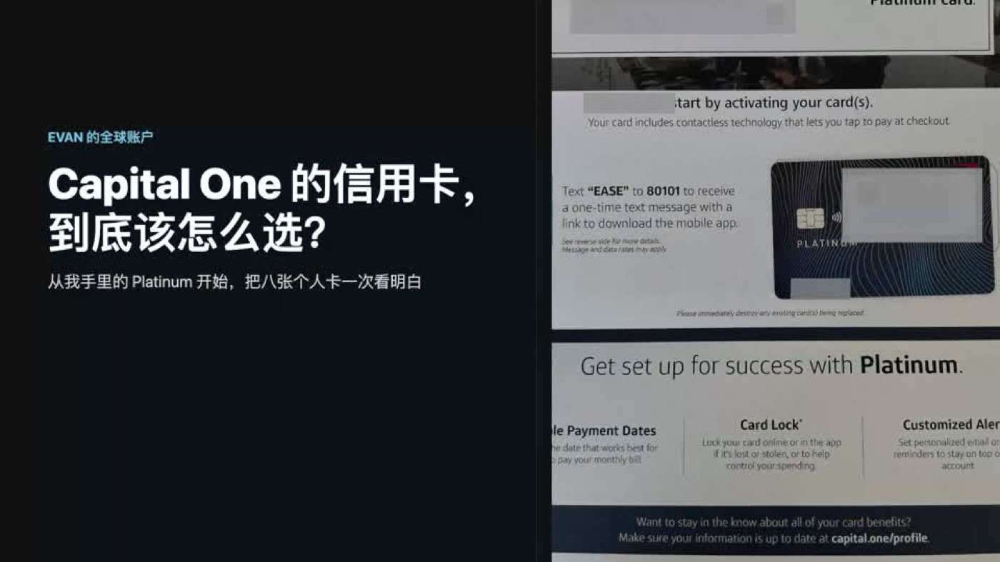
为什么我开始研究 Capital One 的整套产品
我现在手里的 Capital One Platinum 没有消费奖励，也没有开卡奖励，单看参数非常普通。但把 Capital One 当前个人信用卡放在一起以后，我发现这家银行从刚建立信用，到免年费返现，再到旅行里程，都安排了对应产品。
对主要在中国或其他国家生活的人，另一个共同点很重要：Capital One 当前说明，美国发行的 Capital One 信用卡不收境外交易手续费。它让海外消费少了一层发卡行附加费用，但不代表所有换汇和支付成本都变成零。
八张卡先放进一张表
| 卡片 | 官网信用范围 | 年费 | 基础奖励 | 更适合关注的场景 |
|---|---|---|---|---|
| Platinum | Fair Credit | $0 | 无消费奖励 | 低成本建立记录 |
| QuicksilverOne | Fair Credit | $39 | 所有消费 1.5% 返现 | 信用记录较短、消费类别较杂 |
| SavorOne | Fair Credit | $39 | 餐饮、超市、娱乐 3%；其他 1% | 类别消费较集中且能覆盖年费 |
| Quicksilver | Good / Excellent | $0 | 所有消费 1.5% 返现 | 不想管理奖励类别 |
| Savor | Good / Excellent | $0 | 餐饮、超市、娱乐 3%；其他 1% | 餐饮与生活类别支出较高 |
| VentureOne | Good / Excellent | $0 | 所有消费 1.25X 里程 | 低成本接触 Capital One 里程 |
| Venture | Excellent Credit | $95 | 所有消费 2X 里程 | 有旅行需求并会使用里程 |
| Venture X | Excellent Credit | $395 | 所有消费 2X 里程 | 稳定旅行并能使用指定权益 |
表里的信用范围只是 Capital One 官网对公开产品的分类，不是批准标准，也不是个人一定会看到的结果。开卡奖励、零利率期和其他条款可能因页面、时间和个人 offer 不同。
共同点：没有境外交易手续费
Capital One 当前官方说明，美国发行的 Capital One 信用卡不收境外交易手续费。其他发卡机构如果收取，这类费用常见约为交易金额的 1% 到 3%。例如一笔等值 100 美元的海外消费，3% 就是额外 3 美元。
但“没有境外交易手续费”和“没有货币换算”是两回事。使用人民币、新币或其他币种消费时，支付网络仍需要把金额转换成美元；处理日的汇率也可能与交易日不同。
如果境外终端提供当地货币和美元两种结算选项，美元选项可能属于动态货币转换（DCC）。Capital One 的海外用卡说明建议注意 DCC 可能带来的额外成本；我通常会选择当地货币，再让支付网络完成换算。
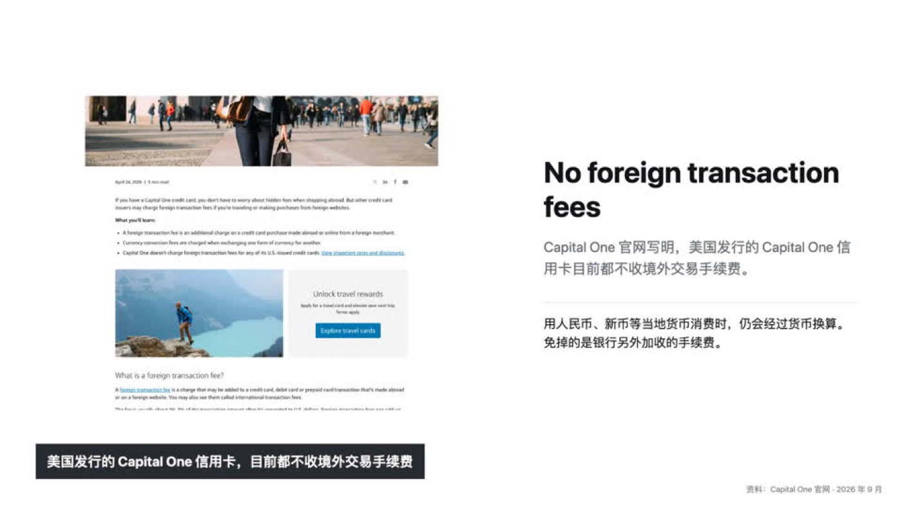
同一个名字，可能对应不同条款
Capital One 官网会按 Fair、Good 和 Excellent Credit 展示不同产品。同一个卡名可能有多个公开版本：例如 Quicksilver 的 Good 与 Excellent 版本都可能是免年费、1.5% 返现，但 Excellent 公开版本当前还显示 200 美元开卡奖励和一段零利率期；Good 版本则没有这些公开内容。
因此，不能只听别人说“我申请了 Quicksilver”，就假设自己一定拿到相同条款。真正需要核对的是自己页面里显示的年费、奖励、消费要求、利率和其他披露。
第一组：信用记录较短时的三张卡
Platinum：零年费，但没有消费奖励
Platinum 就是我现在使用的卡。官网把它放在 Fair Credit 范围，年费为 0，没有消费返现。它的价值不是靠消费赚钱，而是用较低持有成本建立并维护一条正常的信用账户记录。
我用它在成都坐地铁、通过微信付款、在新加坡充值和订阅 ChatGPT，目的都是正常使用、按时还款并继续观察记录，而不是为了追求短期奖励。
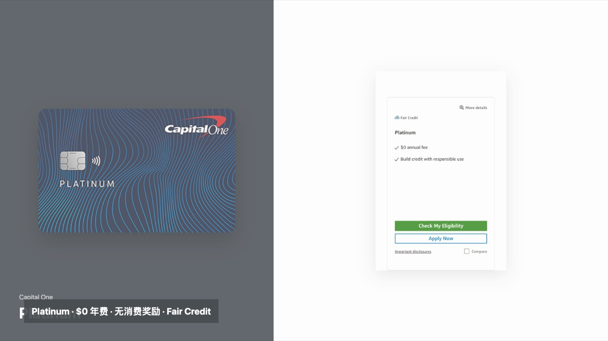
QuicksilverOne：39 美元年费，所有消费 1.5% 返现
QuicksilverOne 同样位于 Fair Credit 范围，年费 39 美元，所有消费返现 1.5%。如果完全忽略税务、退款、非奖励交易和其他成本，单纯用返现覆盖 39 美元年费，需要一年约 2,600 美元符合条件的消费。
这个计算只是一道门槛题，不代表刷到 2,600 美元就一定值得。还要看这些消费是否本来就会发生、能否按时全额还款，以及自己是否可能获得免年费版本。
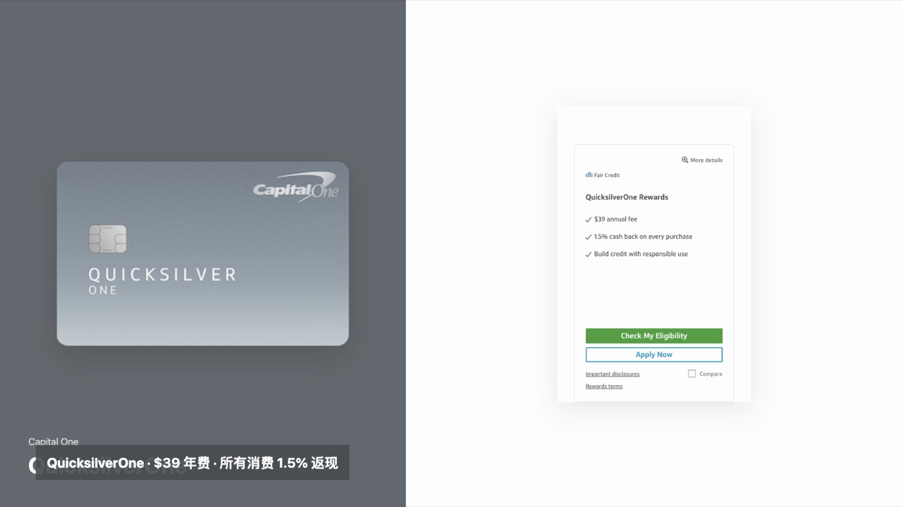
SavorOne：39 美元年费，类别消费最高 3%
SavorOne 的年费也是 39 美元。餐饮、超市和娱乐等公开类别返现 3%，其他消费返现 1%。如果假设每一笔都能获得 3%，约 1,300 美元符合条件的消费可以覆盖年费；如果多数交易只拿到 1%，则需要约 3,900 美元。
现实中不能假设所有消费都按 3% 识别。Capital One 明确说明，奖励类别取决于商户提交的类别代码；通过第三方支付账户、移动支付或类似技术完成的交易，可能因处理方式不同而拿不到较高类别奖励。
第二组：免年费的日常返现卡
Quicksilver：统一 1.5%，重点是简单
Quicksilver 没有年费，所有消费统一返现 1.5%，不需要区分餐饮、超市或旅行。对经常在不同国家、不同平台付款，而且不想管理商户类别的人，这种统一返现更容易理解。
Good 与 Excellent Credit 的公开版本可能有相同基础返现，但开卡奖励和零利率期不同。如果以后我的信用记录允许看到免年费 Quicksilver，它会比 Platinum 更适合作为长期日常卡：持有成本仍然低，同时每笔符合条件的消费有基础返现。
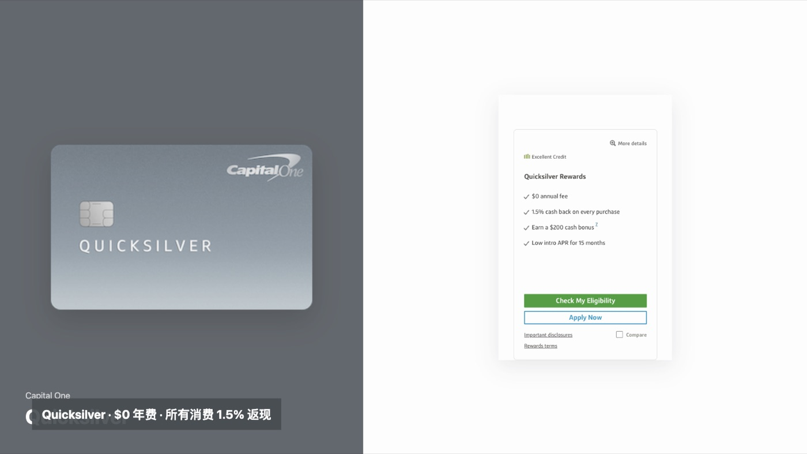
Savor：餐饮、超市和娱乐类别更突出
Savor 当前公开版本没有年费，餐饮、超市、娱乐和部分流媒体类别返现 3%，其他消费 1%。如果日常支出集中在这些类别，它的理论回报会高于 Quicksilver。
但 Savor 不是任何地方都自动返现 3%。我们眼里像餐厅的商户，经过微信、数字钱包或其他支付通道后，不一定仍按餐饮类别传给发卡机构。消费很杂、无法稳定识别类别时，Quicksilver 更简单；类别消费集中且能正常识别时，Savor 才更有优势。
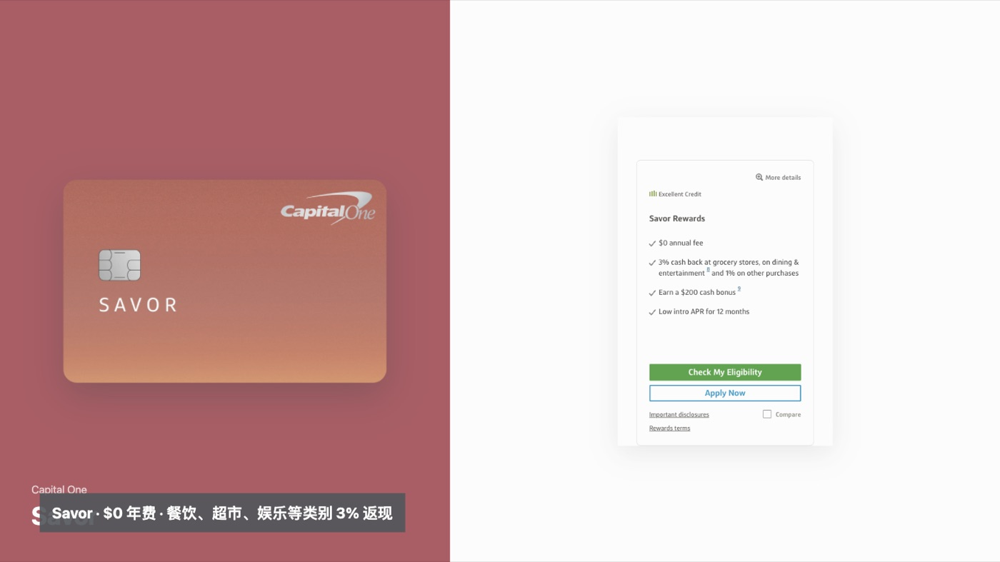
第三组：从免年费里程卡到高端旅行卡
VentureOne：零年费，每美元 1.25X 里程
VentureOne 是这组里持有成本较低的入口。它没有年费，所有消费每美元获得 1.25X 里程；Excellent Credit 公开版本当前还显示 20,000 里程开卡奖励和一段零利率期，但个人是否能看到仍取决于 offer。
它适合想接触 Capital One 里程、又暂时不想承担年费的人。完全不研究旅行兑换时，1.5% 返现的 Quicksilver 往往更直观；已经知道自己会使用里程或转点伙伴时，VentureOne 才更有意义。
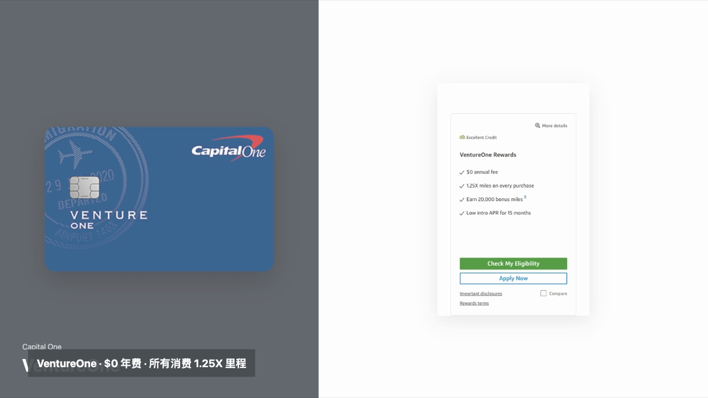
Venture：95 美元年费，每美元 2X 里程
Venture 年费 95 美元，所有消费每美元获得 2X 里程。官网当前公开版本显示 75,000 里程开卡奖励，具体消费要求和奖励资格需要以申请页面条款为准。
2X 看起来高于 1.25X，但不等于每个人都更划算。里程最终价值取决于如何兑换，还要考虑一年自然消费金额、是否会旅行，以及能否在不增加不必要支出的前提下完成奖励要求。消费不高或不会使用里程时，年费可能吃掉不少回报。
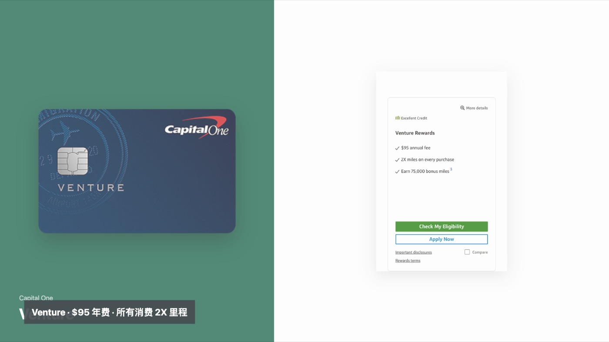
Venture X：395 美元年费，权益必须真的用得掉
Venture X 当前年费 395 美元，所有消费每美元获得 2X 里程。官网同时列出每年 300 美元 Capital One Travel 额度、账户周年后的 10,000 里程奖励，以及 Capital One Lounge 和符合条件的 Priority Pass 休息室权益。
很多人会把 300 美元额度和周年里程直接从年费中减掉，然后把它描述成“等于没有年费”。这个算法只有在本人确实会通过 Capital One Travel 使用额度、账户续年后能用掉里程，并且会使用休息室时才成立。旅行额度会在下一个账户周年到期，而且只能在规定渠道使用，不能直接按现金看待。
对主要在美国以外生活的人，还要先检查常去机场是否有合适休息室、转点伙伴是否匹配自己的航线。权益用不上时，395 美元仍是每年真实发生的成本。
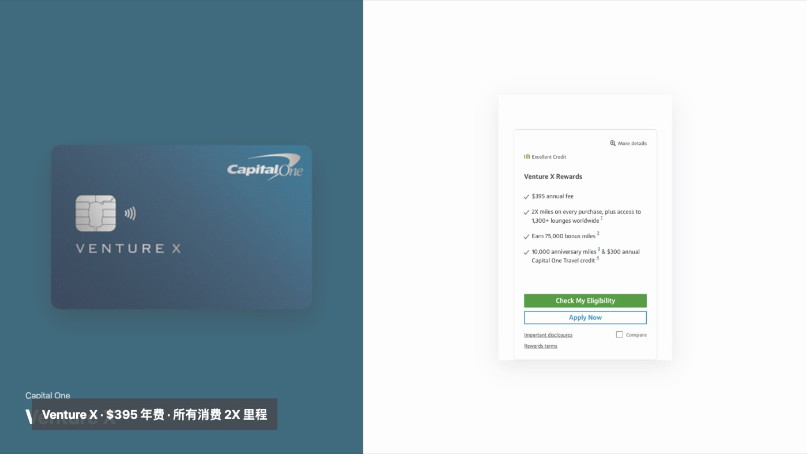
先查本人 offer，再决定是否接受
Capital One 当前的 Check My Eligibility 会先用软查询查看可提供的卡片，不影响信用分；如果选择接受卡片，才会触发可能影响信用分的硬查询。页面也提醒，个人看到的条款、功能和资格要求可能与官网其他位置不同。
该页面还写明，近期刚获批 Capital One 信用卡，或者过去 30 天申请 Capital One 信用卡两次及以上，可能无法获得部分产品。因此，短时间反复提交申请并不是理想做法。新账户和硬查询也会改变信用档案，信用历史还短时更需要控制节奏。
查看 Capital One Check My Eligibility
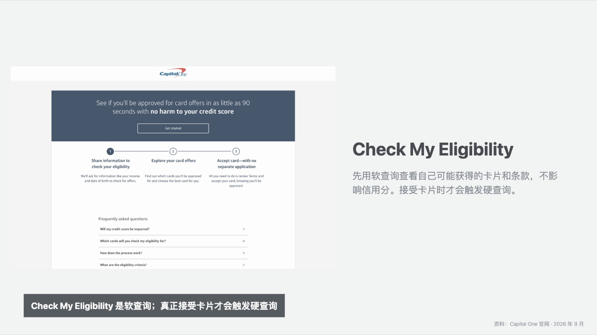
从主要在中国生活的角度，怎么理解这张产品地图
- 刚开始建立信用：零年费、能长期稳定保留账户，比短期返现更重要，Platinum 并不丢人。
- 日常消费很杂：信用条件允许时，可以关注免年费 Quicksilver 的统一返现。
- 餐饮、超市和娱乐占比高：先确认支付通道和商户类别能正常识别，再比较 Savor。
- 准备学习旅行里程：从 VentureOne 的低持有成本开始理解，再判断 Venture 的 95 美元年费是否值得。
- 稳定使用旅行平台和休息室：只有权益与真实出行习惯匹配时，Venture X 的计算才有意义。
每张卡都没有境外交易手续费，只能说明它们对海外使用少了一层发卡行费用。真正决定哪张更适合的，仍然是年费、消费结构、信用阶段、个人 offer，以及奖励能否实际使用。
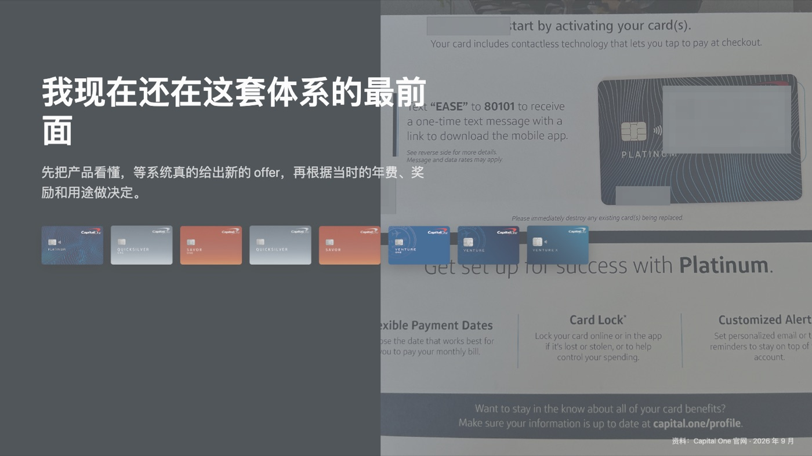
我现在的选择
我仍在这套体系的最前面，手里只有一张 Platinum。这一期不是告诉大家下一张必须申请什么，而是先把 Capital One 的产品逻辑看懂。
以后系统真的给我新的 offer，我会继续记录当时看到的卡片、条款和自己的选择。最终决定会根据当时的信用记录、年费、奖励和用途，而不是只看某张卡是否热门。
免责声明：本文仅为 Evan 的个人经验和公开信息整理，不构成金融、税务或法律建议，也不保证信用卡申请、批准、奖励或权益结果。信用卡属于借款工具，请在自己能够负担的范围内消费，并以 Capital One 官网、申请页面及本人最终账户条款为准。
前后篇
上一篇：这张 Capital One 回到国内以后，到底能不能用？